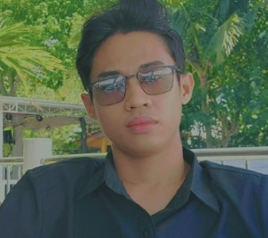

Jessie Berdiguel | WDD 130
Hello! My name is Jessie Berdiguel, and I’m from the Philippines. I’m a returned missionary of The Church of Jesus Christ of Latter-day Saints, where I had the opportunity and privilege to serve others and share the gospel of Jesus Christ. Currently, I work as a Workforce Analyst in one of the world's leading BPO companies, applying my skills to optimize efficiency and support business operations.
Outside of work, I enjoy a mix of activities that keep me engaged and balanced. I love watching documentaries, which feed my curiosity about the world, playing badminton for fun and fitness, and cooking, where I get to experiment with flavors and enjoy sharing meals with loved ones.